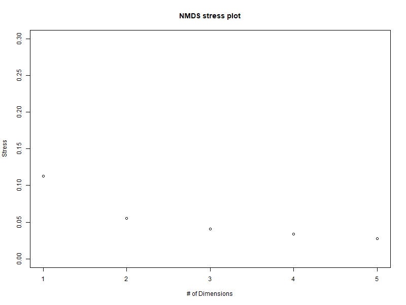
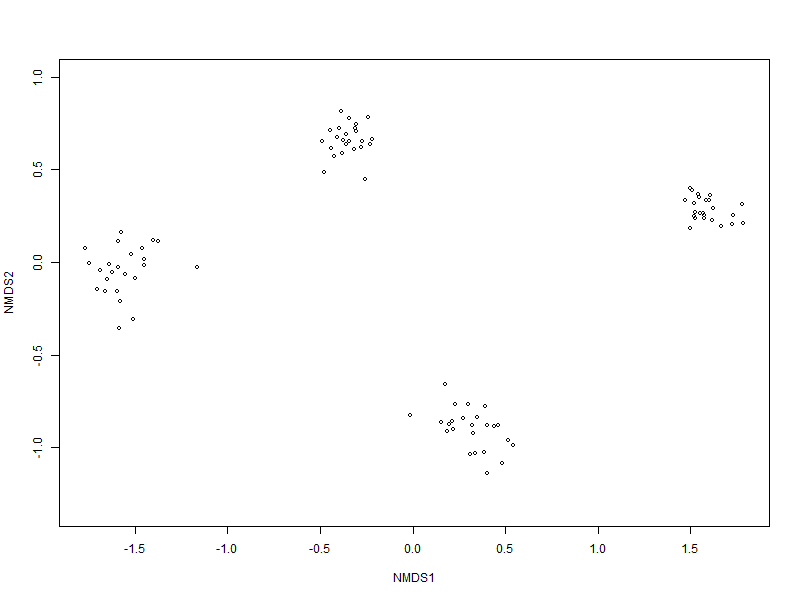
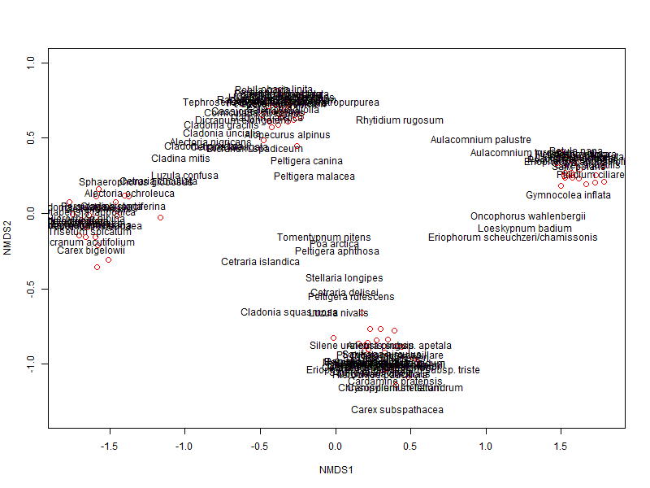
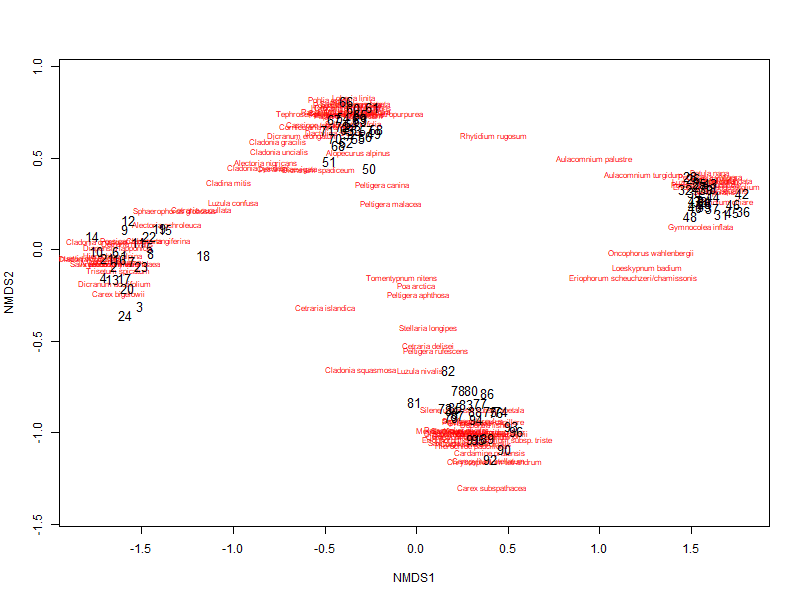
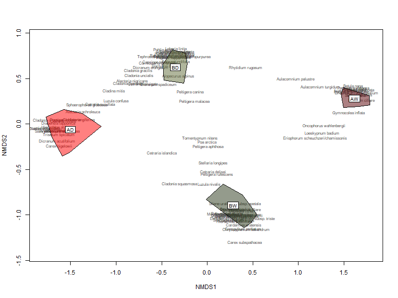

── Conflicts ────────────────────────────────────────── tidyverse_conflicts() ──
✖ dplyr::filter() masks stats::filter()
✖ dplyr::lag() masks stats::lag()
ℹ Use the conflicted package (<http://conflicted.r-lib.org/>) to force all conflicts to become errors
Load the data
itex.long <-read_csv("Data/itex.long.csv")
Lets look at the data to make sure it looks okay
head(itex.long)
# A tibble: 6 × 6
...1 SITE SUBSITE PLOT SPECIES_NAME SumAbund
<dbl> <chr> <chr> <chr> <chr> <dbl>
1 1 ATQASUK AD ADC01 Alectoria nigricans 5
2 2 ATQASUK AD ADC01 Cassiope tetragona 5
3 3 ATQASUK AD ADC01 Cetraria cucullata 6
4 4 ATQASUK AD ADC01 Diapensia lapponica 6
5 5 ATQASUK AD ADC01 Dicranum acutifolium 1
6 6 ATQASUK AD ADC01 Ledum palustre 6
view(itex.long)
Here we have another ITEX dataset where we have information on species composition and species abundance within two different ITEX sites
unique(itex.long$SITE) # two sites
[1] "ATQASUK" "BARROW"
unique(itex.long$SUBSITE) # four subsites, two within each site
[1] "AD" "AW" "BD" "BW"
This is what the different habitats name represent: AD = ATQASUK dry AW = ATQASUK wet BD = Barrow dry BW = Barrow wet
Exercise
Using the ITEX dataset (itex.long.csv), plot the species composition from two sites and four sub-sites in an NMDS ordination space and group them based on their location.
Lets first think about how we should restructure our data to be able to fit an ordination. We need to convert our data from a long format to a wide format.
Yes that seemed to work, make sure that you make a new dataframe (in our case itex.nmds) instead of overwiting the old one, because we need information on the sites and subsites later on.
Now we can start making our NMDS
Here we are assigning a distance matrix to “dist” using Bray-Curtis index (remember how that index was suitable for species abundance data).
dist <-vegdist(itex.nmds, method ="bray")
Notice – if you get an error saying “Error in vegdist: (itex.nmds, method =”bray”) : could not find function “vegdist” – you need to load the vegan package !!
Here is a way to estimate how many dimensions we need for our analysis
Functions are used in R to perform a certain tasks. First you define the function (in our case NMDS.scree) and then later on you can call that function to perform a task
NMDS.scree <-function(x) { # where x is the name of the data frame variableplot(rep(1, 5), replicate(5, metaMDS(x, autotransform = F, k =1)$stress), xlim =c(1, 5),ylim =c(0, 0.30), xlab ="# of Dimensions", ylab ="Stress", main ="NMDS stress plot")for (i in1:10) {points(rep(i +1,5),replicate(5, metaMDS(x, autotransform = F, k = i +1)$stress)) }}
Here we are calling our function to perform a NMDS for 1-5 dimensions and then plotting the nr. of dimensions vs the stress.
We perform this to evaluate the optimal number of dimensions we will use in our analysis. Remember that we want our analysis to have as low stress as possible but also if we can get away with low number of dimentions that is good. So we will choose the number of dimention depedning on the difference in stress level between dimentions.
NMDS.scree(dist)
This could take a while…

Here we can see that between 2 and 3 dimensions, there isn’t much difference - so we can go with 2 dimensions.
set.seed(2)# set.seed() allows you to control the randomness in your code, making your results reproducible. It doesn't really matter what number you put in the brackets, you just have to put some number
Here, we perform the final analysis and check the result
NMDS1 <-metaMDS(dist, k =2, trymax =100, trace = F)
k = 2 defines the number of dimensions we want to use, in our case 2, trymax determines the number of fits the ordination will perform to find the best fit, in our case 100 fits
Lets check the results - check if the stress looks good.
NMDS1stressplot(NMDS1)
From the summary of the ordination you can see that the stress is pretty good - around 0.06
Now we can plot our ordination
plot(NMDS1,)

This function only presents the plots in our analysis (so each row in our dataset). If we want to include species as well we can add the species scores by giving the metaMDS the original community matrix as input and specifying the distance measure.
So essentially we are performing a new ordination analysis and instead of using vegsdist we define the distance within the ordination.
NMDS2 <-metaMDS(itex.nmds, k =2, trymax =100, trace = F, autotransform =FALSE, distance ="bray")plot(NMDS2)plot(NMDS2, display ="sites", type ="n")text(NMDS2, display ="species")points(NMDS2, display ="sites", col ="red", cex =1.25)

Alternatively, you can use the functions ordiplot and orditorp
ordiplot(NMDS2, type ="n")orditorp(NMDS2, display ="species", col ="red", air =0.01)orditorp(NMDS2, display ="sites", cex =1.1, air =0.01)

Now this is a nice plot - we can see how the plots are really separated in space (represented as numbers) and each one of our four habitats (or subsites) associated with different plant species. But we don’t know which group belongs to which subsite.
First we need to define our subsites in a vector.
subsites <- itex.wide$SUBSITE #remember how I told you not to overwrite this dataset, now we are going to use the SUBSITE column to define our groupscolors <-c(rep("#ff0000", 24), rep("#590004", 24), rep("#606c38", 24), rep("#283618", 24)) #make a vector of different colors that you think are nice
# Plot convex hulls with colors based on the group identityordiplot(NMDS2, type ="n")#orditorp(NMDS2, display = "sites", type = "n", air = 0.01, cex = 1.25)orditorp(NMDS2, display ="species", col ="#444444", air =0.01)for(i inunique(subsites)) {ordihull(NMDS2$points[subsites == i, ], draw ="polygon",groups = subsites[subsites == i],col = colors[subsites == i][1], # Use a single color per grouplabel =TRUE)}

You can skip plotting in the species or the plot numbers since it makes it a bit complicated
Okay there we have it, notice how the habitats (the two dry habitats and the two wet habitats) are closer together in space than the two sites - why could that be?